Игра Престолов
Восьмой, финальный сезон сериала «Игра престолов» выйдет в апреле 2019 года.
HBO, понимая, как мы все изнываем от нетерпения, любую информацию выдает буквально по чайной ложке, чтобы мы еще больше мучились. Кроме примерной даты премьеры, количества серий и обещания самой масштабной битвы в истории телевидения, про финальный сезон в общем всерьез ничего больше и не известно. И поскольку ждать еще несколько месяцев, почему бы не поговорить о том, как именно «Игра престолов» вдруг стала главным сериалом, который смотрит – без преувеличения – весь мир. [текст впервые опубликован на Озон.Гид]
К разговору про «Игру престолов» сложно подступиться: вроде бы все про него слышали, даже те, кто не смотрит и не следит в курсе сюжета хотя бы в общих чертах. Поза «я не смотрю эту вашу Игру престолов» стала для многих снобов столь же обязательной, сколь раньше была поза «не читал я вашего Гарри Поттера/Властелин колец, не смотрю Звездные войны», итд. старое доброе позиционирование собственной индивидуальности через отрицание массовой культуры – это наше всё и вряд ли оно в ближайшем будущем куда-то денется. Так что в общих чертах про сериал и книги знают более-менее все (скажем так – более-менее все пользователи интернета). Определения разнятся: от «Санта-Барбары с драконами» или «Карточного домика с драконами» до просто «сказки про драконов» или чего-нибудь столь же пренебрежительного. Итак. Давайте начнем с простого – с сюжета.
Где-то в далекой галактике есть планета, на которой времена года продолжаются не месяцы, а годы. За долгим летом может следовать многолетняя зима и вся жизнь людей фактически завязана на приготовление к тому, чтобы эту зиму пережить. И мир этот поделен морем. По одну сторону моря – условный Восток – лежит континент с городами-государствами работорговцев, кочевыми племенами и останками древней великой цивилизации, по другую – материк, максимально похожий на средневековую Европу: семь королевств, объединенных в одну страну и управляющихся одним королем. Король этот сидит в городе Королевская гавань на троне, сделанном из мечей своих врагов: Железном престоле.
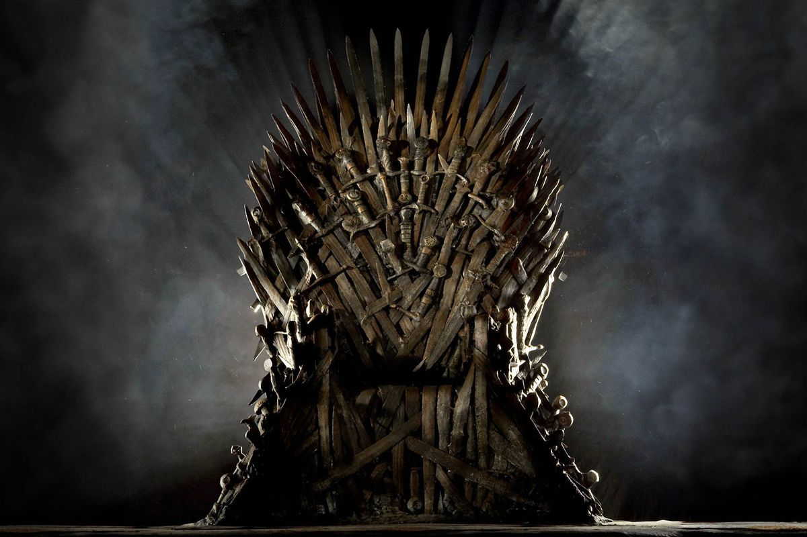На Севере семь королевств окружает гигантская стена изо льда, отгораживающая землю цивилизованных людей от земли варваров – одичалых. Стену сторожит Ночной дозор – орден монахов-рыцарей, чьё единственное призвание в жизни – защищать мир живых. Почему живых? Потому что легенды гласят, что за стеной живут Белые ходоки – живые мертвецы. Правда их никто не встречал уже много столетий, также как и драконов, так что может быть живут, а может быть и сказка всё это.
На протяжении веков на Железном престоле сидел король из одной семьи – рода Таргариенов. Давно-давно, его предки покорили семь королевств с помощью драконов. Но поскольку женились Таргариены друг на друге, то к финалу и род человеческий, и род драконий, окончательно выродились и последний король был натуральным психом, который жег людей направо и налево. Случился бунт и гражданская война, Таргариенов свергли и казнили, на престол сел новый король – Роберт Баратеон. Недорезанных Таргариенов – новорожденную девочку и её старшего брата – спасли и отправили от греха подальше за море.
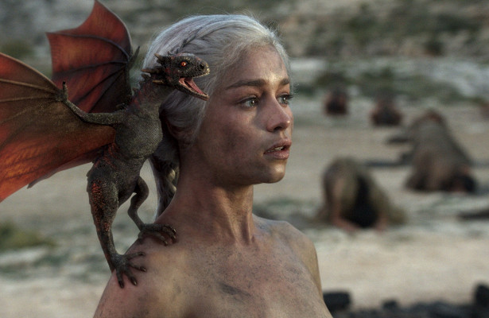История начинается с того, что король Роберт приезжает в замок своего старого друга и товарища северного лорда Неда Старка. Приезжает, чтобы сделать ему предложение – стань моей правой рукой, моим премьер-министром – Десницей короля. Я тебя знаю, ты благородный и верный, а то в столице меня сплошные гады окружают и им веры нет. Нед соглашается. Оказавшись в столице он быстро выясняет от чего умер его предшественник – предыдущий королевский Десница: оказывается тот случайно выяснил главный секрет королевы: все королевские дети на самом деле не от короля, а от её родного брата. То есть прав на престол они иметь не могут. Дальше король при загадочных обстоятельствах гибнет, слово за слово, гибнут еще несколько приятных во всех отношениях людей и семь королевств погружаются в пучину гражданской войны.
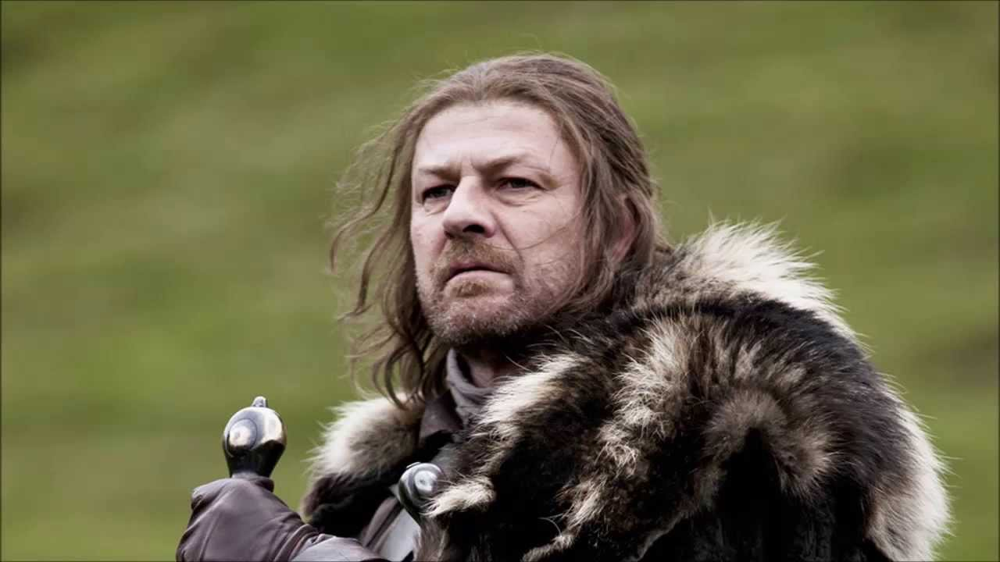Собственно весь сериал «Игра престолов» - это история десятка героев, каждый из которых мечтает стать королем. Или помочь своему союзнику стать королем. Или отомстить другому претенденту на трон, который в пылу борьбы кого-то ему близкого убил.
И всё-таки. Сюжет, который я только что нарочно максимально просто описал – совсем не нов. Есть десятки, если не сотни историй борьбы за престол. Массив качественной литературы, выдающихся исторических романов, неплохих костюмных сериалов и фильмов, почему же тогда Игра престолов так популярна?
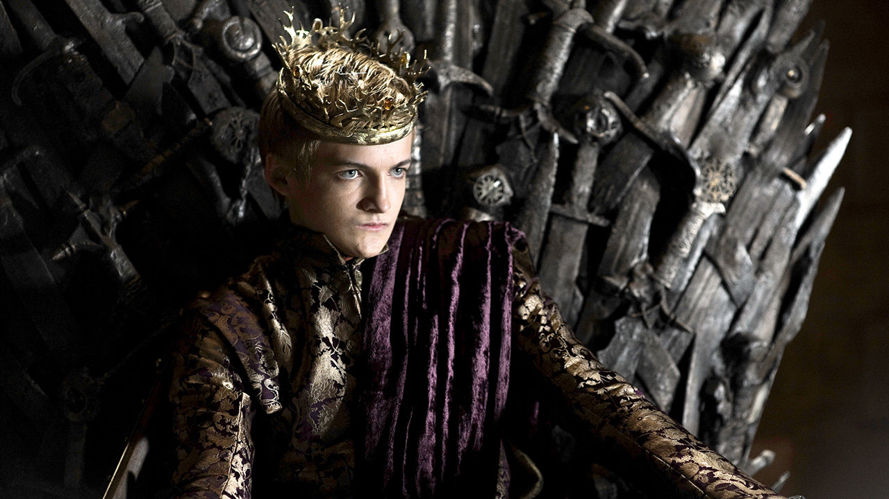А насколько именно, кстати, популярна Игра Престолов? Мы точно знаем сколько зрителей смотрит каждую серию в эфире телеканала HBO и это очень внушительная сумма – финал седьмого сезона смотрели 16.5 млн. человек. Но аудитория сериала не ограничивается подписчиками HBO. «Игру престолов» показывают платные и бесплатные телеканалы и VOD-сервисы по всему миру и кроме того сериал является (официально) самым скачиваемым в истории на всех основных пиратских ресурсах. Другими словами суммарная аудитория – можно смело предположить – исчисляется точно десятками миллионов, а то и сотнями. Но куда важнее не сухие цифры, а, скажем так, степень присутствия мира, придуманного Мартином и шоураннерами сериала Бениофом и Вайсом, в нашей повседневной жизни.
Игра престолов стала универсальной темой для разговора практически в любой компании. она объединяет людей из разных стран, разных социальных страт и самого разного финансового положения: от американских миллиардеров, до китайских чиновников, и студентов из Нижневартовска. В реальной жизни Игра престолов превратила, например, город Дубровник в Хорватии из провинциального курорта в одну из столиц европейского туризма, где прибыль – прямая и косвенная - от съемок здесь Игры Престолов (в Дубровнике снимают Королевскую гавань) исчисляется сотнями миллионов евро. Игра престолов крепко и глубоко проникла во все сферы массовой культуры, от бесконечных онлайн-мемчиков про зиму, которая близко, до цитат и отсылок как в развлекательных романах, так и в серьезной новейшей литературе. Уже не вызывает удивления журналист New York Times, который на пике предвыборной борьбы пишет твит «скорее бы началась Игра Престолов, чтобы я мог наконец про нормальную политику писать, а не про Трампа» или источник этого же издания в Белом доме, который комментирует громкую отставку крупного чиновника из администрации словами «для него наступила зима».
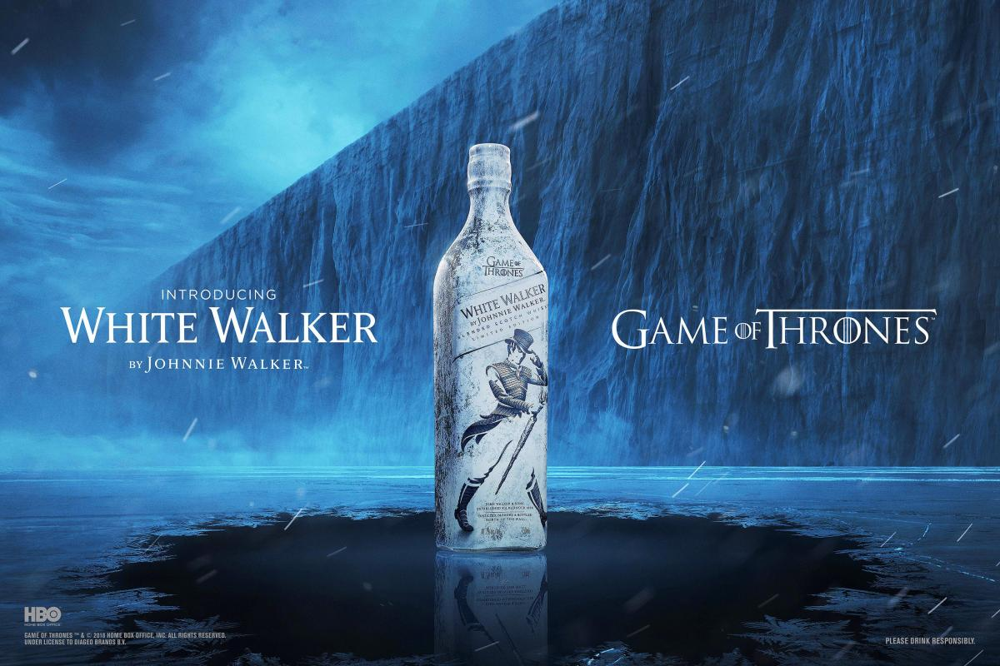Так почему же? Что именно в этом сериале так зацепило человечество – а в данном контексте именно это слово будет более уместно. Популярность сериала «Игра престолов» точно не проистекает из популярности книг Джорджа Мартина. Да, это были бестселлеры, но это был нишевый успех – пусть громкий – у довольно специальной аудитории любителей сложно написанных и сложно придуманных фэнтезийных романов. Популярность книжной серии даже сравнить нельзя, скажем, с популярностью романов Джоан Роулинг о Гарри Поттере. И если фильмы вселенной Роулинг своему невероятному успеху обязаны именно книгам, то роль Мартина в построении сериальной вселенной значительно менее важная. Говоря образно, Джордж Мартин, как могучий демиург, создал кусок первоклассного мрамора, из которого уже другие люди – авторы Дэвид Бениофф и Дэниел Вайс – высекли свою Пьету. они разобрались в плотной и сложной прозе автора, оставили главное, пожертвовали деталями - иногда излишними, иногда дорогими сердцу поклонников - и создали полноценное новое телевизионное повествование.
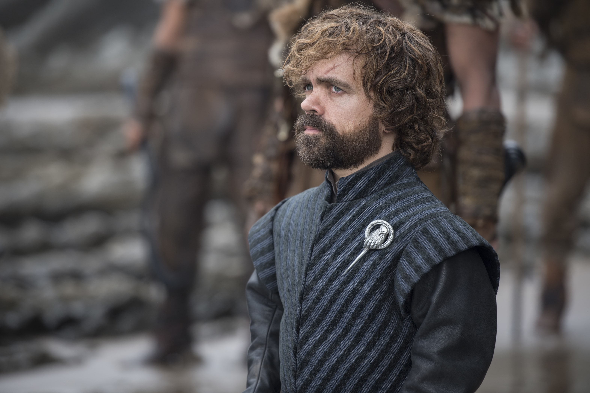Но давайте по порядку.
Один из основополагающих вопросов в любом разговоре об «Игре престолов» является вопрос жанра. Что это? Фэнтези? Те самые снобы, которых мы упоминали в одном из первых абзацев, предпочитают примитивно говорить о сериале как об истории с драконами и ледяными зомби, делая именно этих сказочных существ основными героями. Очередная сказка для хипстеров-эскейперов. На самом деле, разумеется, всё гораздо сложнее.
В своё время аналогичным вопросом – почему это так популярно – люди задавались, глядя на появление многомиллионной армии поклонников «Звездных войн». Тогда был найден ответ-консенсус: секрет успеха Джорджа Лукаса в том, что он сумел создать идеальный жанровый коктейль: немного космических приключений, немного классического рыцарского романа, немного классического пиратского романа, немного романтики и чуть-чуть динозавров. То есть взять от каждого любимого мальчишками и девчонками жанра по чуть-чуть, взболтать, но не смешивать.
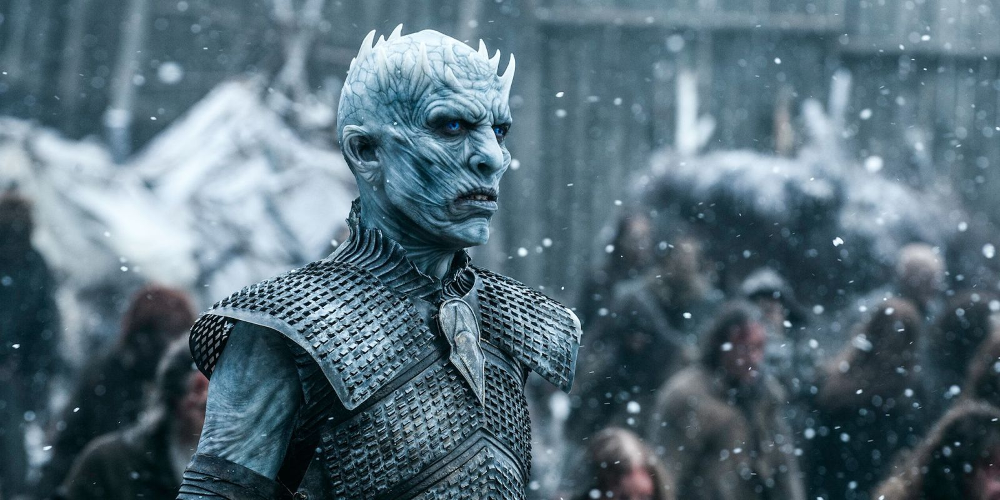Примерно тоже самое можно сказать и об Игре престолов. Это точно не классическое фэнтези и уж совсем точно не фэнтези героическое. Никаких вам магии и меча. Игра престолов – классический роман, могучая сага, инкорпорирующая в себя множество жанров, от комедии и buddy comedy до драмы, трагедии (в классическом смысле этого слова) и политического триллера до фильма ужасов. Те самые драконы и ледяные зомби, которых журналисты поминают к месту и не к месту, не более чем один из элементов истории, причем подчеркнуто – особенно драконы – не сказочный. Не говорящие драконы Толкиена, а полевая авиация. Сильное оружие – да, но точно не магический артефакт, дающий 100% гарантию победы.
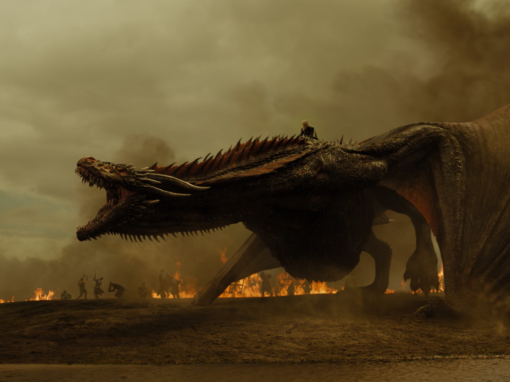Обаяние Игры престолов именно в идеальной гармонии этих разных жанров в рамках одной сложной истории. Точности тональности, которая не меняется от эпизода к эпизоду и – и это, пожалуй, главное – бесконечной убедительности всех героев.
И тут мы подошли к главной причине, по которой мир вокруг нас болеет историей про борьбу за выдуманный трон: это лучшие и самые человечные и сложные персонажи, которых мы видели на телевидении. Пожалуй максимально точно эту мысль проиллюстрировал, как это не странно, министр культуры Владимир Мединский:
Меня спрашивали по пути про историю святого князя Владимира. Обратите внимание, как летопись рассказывает его историю: пока не крестился, такой «плохой» был, а потом стал «хорошим». Вот классический взгляд наш на историю. Русскому человеку тяжело сделать такое кино, как "Игра престолов". Потому что все эти герои - они ни хорошие, ни плохие, они непонятно какие
, - цитирует издание Фонтанка министра.
Термин «непонятно какие», который так искусно использует министр культуры, в реальности означает «настоящие». Не картонные хорошие или плохие персонажи, а живые настоящие люди (в скобках отметим достойный восхищения талант министра, который одной короткой фразой сумел продемонстрировать полное презрение к собственному народу и заодно великой русской литературе).
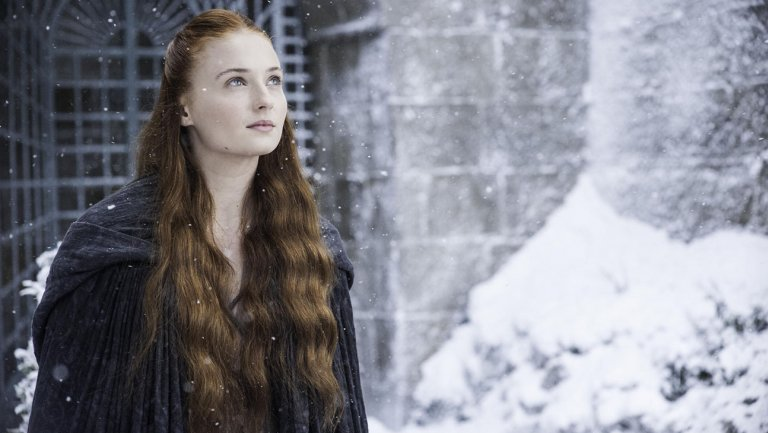Мир «Игры престолов» населяют десятки героев и ни один из них – ни самый вроде бы страшный злодей, ни самый добрый добряк – никогда не сможет поместиться в узкие рамки понятий «хороший» или «плохой». Герой, который в первой серии пытается убить ребенка, к финальному сезону будет вызывать у зрителя сочувствие, понимание и даже восхищение. Благородный рыцарь, ставящий честь и правду превыше всего – жалость и осуждение (самые чудовищные и постыдные преступления в истории, кстати, совершает именно герой, считающий себя самым честным и искренне верящий в то, что сила в правде). Страшная королева, готовая на любую низость и любое преступление ради власти найдет у нас понимание, потому что она не злодей из фильма про Джеймса Бонда или книги Мединского, а живой человек, способный на самые разные поступки и испытывающий самые разные чувства.
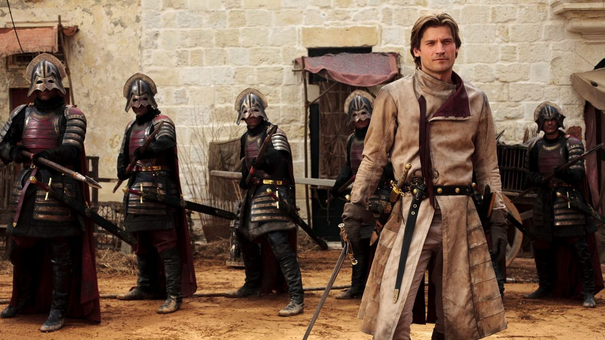Именно эта особенность, а совсем не откровенные сцены разнообразного секса, натуралистическое насилие или могучие драконы и ледяные зомби, делает «Игру престолов» особенной и просмотр её невероятно увлекательным. Предсказуемость многих сериалов, нам хорошо понятная, часто связана как раз с тем, что мы сразу понимаем вектор развития персонажа. Понимаем, что он точно хороший. Может быть не идеальный, но очевидно не способный на подлость или преступление. Также мы понимаем, что он точно не умрет до финала, потому что кто же убивает своих главных героев. Мартин и шоураннеры Игры престолов смеются в лицо этим правилам: герои, в том числе и главные, способны на всё, что угодно и каждый из них может умереть в любую минуту. А мы будем оплакивать своих любимцев, потому что за несколько серий каждый из них станет нам если не членом семьи, то точно близким другом.
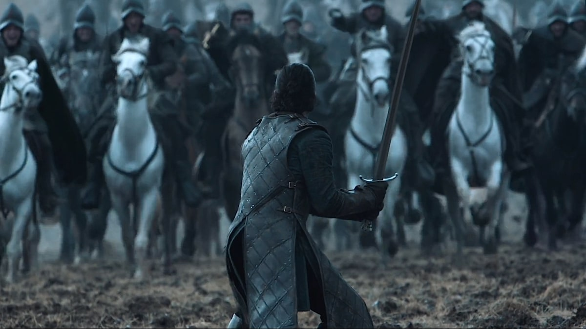За престол в сериале сражаются не абстрактные короли и королевы, а очень понятные нам люди, которым нам легко будет сопереживать и чьи трагедии и победы станут для нас источником расстройства или радости. Это обстоятельство + сложно придуманный сюжет, наполненные высококлассными политическими интригами, неожиданными поворотами, союзами и предательствами, и сделали «Игру престолов» главным сериалом современности. Хотя, справедливости ради, драконы и ледяные зомби эту конструкцию только украшают, делая её еще более увлекательной и зрелищной.
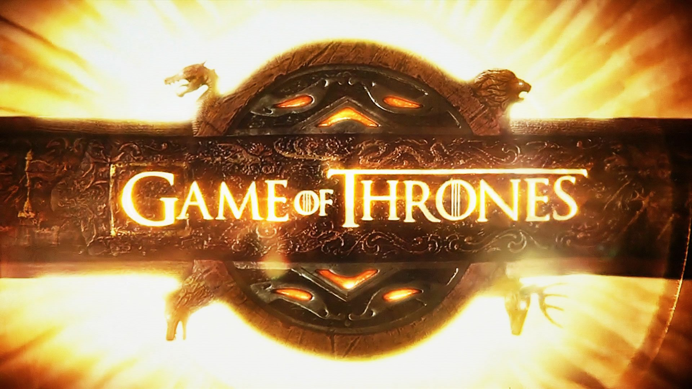